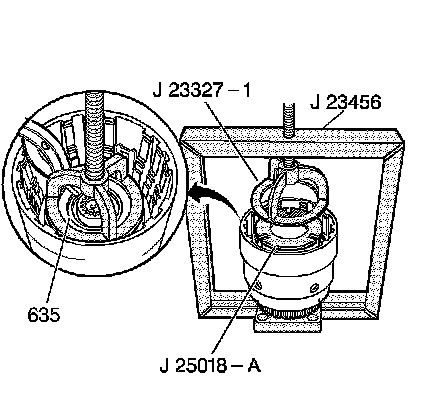

Input Housing and Shaft Assembly Assemble
Input Housing and Shaft Assembly Assemble
Tools Required
^ J 23327-1 Forward Clutch Spring Compressor (Bridge)
^ J 23456 Booster and Clutch Pack Compressor
^ J 25018-A Clutch Spring Compressor Adapter
^ J 26744-A Seal Installer
^ J 29882 Overrun Clutch Seal Protector
^ J 29883 Forward Clutch Seal Protector
1. Install a new input to forward clutch housing O-ring seal (622).
2. Inspect the 3rd and 4th clutch piston (623) for the following conditions:
^ Porosity or damage
^ Seal damage
3. Install the 3rd and 4th clutch piston (623) into the input housing.
4. Inspect the forward clutch housing (628) for the following conditions:
^ Proper check ball operation
^ Damage or distortion
^ Burrs in the seal areas
^ Cracks

5. Inspect the forward clutch piston for the following conditions:
^ Porosity or damage
^ Seal damage
^ Apply leg damage
6. Install the forward clutch piston (630) into the forward clutch housing (628).
7. Install the 3rd and 4th spring assembly (626) into the 3rd and 4th clutch apply ring (625).
Important: The forward clutch piston (630) apply legs must be indexed with the 3rd and 4th clutch apply ring (625) legs.
8. Install the forward clutch housing (628) and forward clutch piston (630) into the 3rd and 4th apply ring (625).
9. Install the J 29883 on the input housing.
10. Install the 3rd and 4th clutch apply ring and the forward housing and piston assembly using the following procedure:
^ Hold the assembly by the 3rd and 4th clutch apply ring (625) legs during installation.
^ Do not let the forward clutch piston (630) separate from the forward clutch housing.
^ Firmly seat the assembly.
11. Remove the J 29883 from the input housing.

12. Inspect the overrun clutch piston (632) for the following conditions:
^ Porosity or damage
^ Seal damage
^ Overrun clutch ball proper operation
13. Install the J 29882 on the input housing.
14. Install the overrun clutch piston (632) into the input housing.
15. Remove the J 29882 from the input housing.
16. Using the J 26744-A, carefully install the overrun clutch piston outer seal.
17. Install the overrun clutch spring (634) assembly.

18. Install the J 23327-1 and the J 25018-A, and compress the overrun clutch spring assembly using J 23456.
19. Install the overrun clutch spring retainer snap ring (635).
20. Remove the J 23327-1 and the J 25018-A.